2 字处理软件操作实验
实验一 Word 文档的基本操作和排版
一、实验目的
1. 掌握 Word 文档的建立、保存与打开。
2. 掌握文档通过键盘输入方式。
3. 掌握文档的基本编辑，包括复制、移动、删除等操作。
4. 熟悉掌握文档编辑中的快速编辑、文本的查找、替换操作。
5. 熟悉掌握字符格式化、段落格式化、项目符号和编号、分栏等操作。
6. 掌握页面的排版。
二、实习内容
1．进入 Word 2007，熟悉其工作界面和各组成部分，如图 2. 1 所示。
快速访问工具栏 组
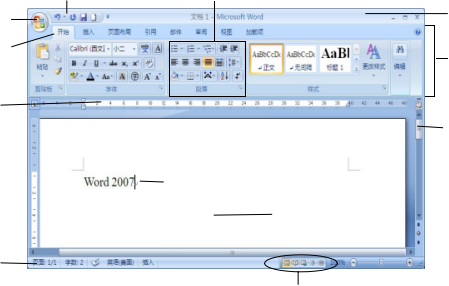Office 按钮 标题栏
标尺
滚动条
插入点或光标
编辑
状态栏
视图按钮
图 2. 1 Word 2007 工作界面
2．用你熟悉的一种输入法输入以下文字（暂不设置任何格式），并以 W1.docx 命名（系 统默认保存类型为 Word 文档即为.docx）文件保存在 E 盘根目录下的 Word 文件夹中。
3．打开 W1.docx 文件，对文字和段落进行如下编辑（效果如样张）：
① 在文档最前面插入标题“2.2.1 阅读”，将其设置为“标题 2”样式、居中；将标题 “《春》”设置为“标题 3”样式，字体为华文楷体，字号为二号，效果为空心，颜色为绿色， 对齐方式为居中。
【知识点提示】
u 要在文档最前面插入标题，先要将光标置于最前面，可用 Ctrl+Home 组合键。
u 按 Enter 回车键插入新行，然后输入标题文字。
u 使用“样式”，可用“开始”选项卡下“样式”组中的相应命令按钮。
u 通过“开始”选项卡下“字体”组中的命令按钮，或单击“字体”组中的对话框启 动器，在打开的“字体”对话框中设置字体、字号等。
② 在标题下方再插入一行文字“作者：朱自清”，将其设置成右对齐、宋体、小三号、 加粗、倾斜、字体颜色为蓝色，并对该段文字添加“黄色”底纹。
③ 将正文（“盼望着……成天的嘹亮地响。”）设置为小四号，各段落首行缩进 2 个字 符。行距设为 1.5 倍，段前、段后间距为 0.5 行。
【知识点提示】
u 通过单击“开始”选项卡下 “段落”组中的对话框启动器，在打开的“段落”对 话框中设置段落格式。
u 底纹可通过单击“开始”| “段落”组上的“底纹”按钮进行设置。
④ 将正文第一段（“盼望着……脚步近了。”）的字符间距加宽 2 磅；将第二段（“一切 像刚睡醒……草绵软软的。”）分为等宽两栏，加分隔线。
【知识点提示】
u 字符间距通过单击“开始”选项卡下“字体”组中的对话框启动器，在打开的“字 体”对话框中选择“字符间距”选项卡进行设置。
u 分栏通过单击“页面布局”|“页面设置”组中的“分栏”图标按钮，在弹出的下 拉列表中选择“更多分栏”选项，将打开如图 2. 2 所示的“分栏”对话框，选择栏 数、分隔线进行设置。
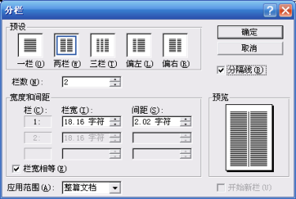
图 2. 2 “分栏”对话框
⑤ 将正文第三段（“桃树……还眨呀眨的。”）设置首字下沉两行，字体为隶书。
【知识点提示】
u 单击“插入”选项卡上 “文本”组中的“首字下沉”图标按钮，在弹出的下拉菜 单中选择“首字下沉”选项，将打开如图 2. 3 所示的“首字下沉”对话框，在“位
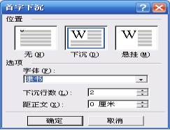置”选项中选择“下沉”，在“选项”|“字体”中选择“隶书”，下沉行数为 2 进 行设置。
图 2. 3 “首字下沉”对话框
⑥ 在文档后面空一行后，增加下面三行内容： 妙语录：
指点我吧，我的朋友！我是横海的燕子，要寻觅隔水的窝巢。 春何曾说话呢？但她那伟大的潜隐的力量，已这般的，温柔了世界了！
⑦ 将新增加第一行文字设为红色、三号、黑体、加粗、倾斜、阴文、波浪下划线，并 添加着重号。
⑧ 给新增加第二、三行加上项目符号“§”。
【知识点提示】
u 选中新增加的第二、三行。
u  按钮，在弹出 如图 2. 4 的下拉列表框中选择“定义新项目符号”命令，打开如图 2. 5 所示的“定 义新项目符号”对话框，单击“项目符号字符”选项中的“字符”按钮，打开 “符 号”对话框，在“字体”列表框中选择“Symbo1”找到需要的项目符号，如图 2. 6 所示。
按钮，在弹出 如图 2. 4 的下拉列表框中选择“定义新项目符号”命令，打开如图 2. 5 所示的“定 义新项目符号”对话框，单击“项目符号字符”选项中的“字符”按钮，打开 “符 号”对话框，在“字体”列表框中选择“Symbo1”找到需要的项目符号，如图 2. 6 所示。
图 2. 4 “项目符号”列表框
图 2. 5 “定义新项目符号”对话框
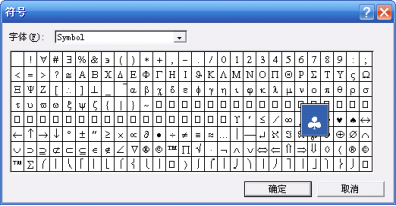
图 2. 6 “符号”对话框
⑨ 给新增加的三行段落添加蓝色单直线方框、线宽 1.5 磅；浅青绿、样式为 5%的底 纹。
【知识点提示】
u 选中新增加的三行文字。
u 按钮，在弹出的菜单中选择“边 框和底纹”命令，打开“边框和底纹”对话框，在“边框”选项卡中分别设置边框 类型、线型、颜色、宽度，在“应用范围”列表框中选择“段落”，如图 2. 7 所示。
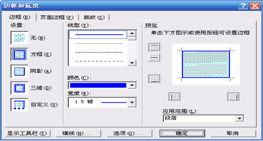
图 2. 7 “边框和底纹”对话框
u 选择“底纹”选项卡，在其中选择填充颜色、图案样式，如图 2. 8 所示。
图 2. 8 “边框和底纹”对话框中“底纹”选项卡
4．对该文档页面作如下编辑：
① 页边距上、下、左、右各为 2 厘米，纸型为 B5。
【知识点提示】
u 通过单击“页面布局”选项卡上 “页面设置”组的相关命令按钮完成，或者单击 “页面设置”组的对话框启动器，打开 “页面设置”对话框，在“页边距”选项 中设置页边距，如图 2. 9 所示；在“纸型”选项中设置纸型为 B5，如图 2. 10 所示。
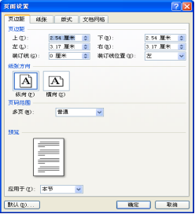 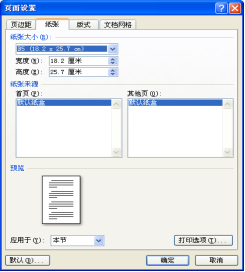
图 2. 9 设置页边距 图 2. 10 设置纸型
② 设置页眉和页脚，页眉内容为“第二章 文学作品阅读”，在页面底端居中位置设置 页码，页码格式为“第 1 页”。
【知识点提示】
u 单击“插入”|“页眉和页脚”组中的“页眉”按钮，在打开的下拉列表中选择要 插入的页眉类型或“编辑页眉”命令，进入页眉编辑状态，在页眉处输入，如图 2. 11 所示。
图 2. 11 输入页眉
u 单击“设计”|“页眉和页脚”组中的“页码”按钮，在打开的下拉列表中选择“设 置页码格式”命令，然后在打开的“页码格式”对话框中设置数字格式，如图 2.12 所示。
图 2.12 设置页码格式
u 单击“设计”|“页眉和页脚”组中的“页码”按钮，在打开的下拉列表中选择“页 面底端”，然后在打开的设计样式库中选择页码样式。
u 将光标移到页码前面输入“第”，再将光标移到页码后面输入“页”。
③ 对页面设置艺术型边框。
【知识点提示】 单击“页面布局”|“页面背景”组中的“页面边框”按钮，打开“边框和底纹”对话
框，然后在“页面边框”选项卡中进行设置。
④ 以自己的班级名称、姓名添加红色（半透明）水印。
【知识点提示】 通过单击“页面布局”|“页面背景”组中“水印”按钮，在打开的下拉列表中选择“自
定义水印”命令，然后在打开的“水印”对话框中选择“文字水印”选项，在“文字”框中 输入文字并设置字体、颜色等，如图 2. 13 所示。
图 2. 13 “水印”对话框
5．用 Word 2007 提供的 5 种视图方式阅览文档，观察在不同视图方式下文档的显示特 点。
实验二 Word 表格处理
一、实验目的
1．熟练掌握表格的建立及内容的输入。
2．熟练掌握表格的编辑。
3．熟练掌握对表格的格式化。
4．掌握对表格单元格进行计算、表格排序。
5．学会将文本转换成表格与表格转换为文本。
二、实验内容
1． 建立如图 2. 15 所示的课程表，并以 W2.doc 为文件名保存在 E 盘根目录下的 Word
文件夹中。
图 2. 15 课程表
【知识点提示】
u 建立上述表格可通过下面常用三种方法：
① 在“插入”选项卡的“表格”组中单击“表格”图标按钮，在弹出的菜单中“插 入表格”下，直接拖动鼠标选择需要的行数和列数，如图 2. 16 所示。
② 在“插入表格”菜单中单击“插入表格”命令，在其对话框中输入所需的行、列 数，如图 2. 17 所示。
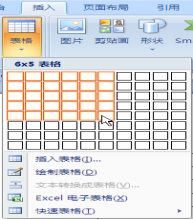 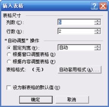
图 2. 16 “插入表格”菜单 图 2. 17 “插入表格”对话框
③ 在“插入表格”菜单中单击“绘制表格”命令直接绘制自由表格。
u 本题的表格是不规则表格，可先建立 6 行 7 列的有规则表格；然后利用“表格工具” 下“布局”选项卡中的相关按钮来实现拆分或合并单元格。
u 表头斜线可通过单击“表格工具”下“布局”选项卡“表”组中的“绘制斜线表格” 按钮，在打开的“插入斜线表头”对话框中选择有关样式，输入列标题和行标题实 现，如图 2. 18 所示。
图 2. 18 “插入斜线表头”对话框
u 表格边框线是通过单击“表格工具”|“设计”|“表样式”组上的“边框”按钮， 在打开的菜单中选择“边框和底纹”命令，然后在“边框和底纹”对话框中选取线 型和线宽进行设置。
u 表格中的竖排文字“上午”和“下午”，可以通过单击“表格工具”|“布局”|“对 齐方式”组上的“文字方向”按钮设置，或单击右键，在弹出的菜单中选择“文字 方向”，在打开的“文字方向-表格单元格”中设置，如图 2. 19 所示。
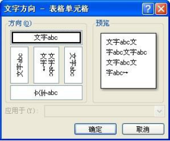
图 2. 19 “文字方向”对话框
注意：如果新建的是规则表格，可用创建表格的第四种方法，即将文字转换成表格，或 使用“快速表格”命令创建。
2. 建立如表 2.1 所示的学生成绩表，为各类数据统计做准备。
表 2.1 学生成绩表示例
姓名 | 大学英语 | 计算机基础 | 高等数学 |
陈小平 | 80 | 67 | 62 |
林立 | 75 | 76 | 66 |
陈红 | 68 | 85 | 89 |
何松 | 84 | 86 | 49 |
张晓明 | 90 | 54 | 67 |
3. 在“计算机”列的右边插人一列，统计每人的总分；在表格最后增加一行，行标题 为“课程平均分”，并计算各科的平均分，平均分均保留一位小数。
【知识点提示】
u 插入行列：首先选中插入行列的相邻行或列，然后单击“表格工具”下“布局”选 项卡“行和列”组中的相应命令按钮实现，如图 2. 20 所示。在表格最后插入一行， 只要将插入点定位到表格的最后一个单元格，按 Tab 键或回车键即可。
图 2. 20 “表格工具”|“布局”选项卡
u 计算总分：先将光标置于要放总分的单元格，然后单击“表格工具”|“布局”|“数 据”组中的“fx 公式”按钮，在打开的“公式”对话框中进行函数设置。图 2. 21 所示为计算第一位学生 “ 陈小平 ”的总分 对 话 框 设 置 。 公 式 中 也 可 写 成 “=SUM(B2:D2)”，但要注意公式中不能使用全角的括号和标点符号，否则系统将 显示“语法错误”。
u 求其余学生的总分可以重复上述操作，也可以使用复制、粘贴公式的方法来完成。
u 求课程平均分时，在“公式”对话框中，从“粘贴函数”中选择 AVERAGE 函数， 在“数字格式”中设置数字格式，公式为“=AVERAGE(ABOVE)”，或者写成 “=AVERAGE(B2:B6)”，“公式”对话框如图 2. 22 所示。
图 2. 21 计算总分“公式”对话框设置 图 2. 22 计算平均分“公式”对话框设置
4．将表格按学生总分降序排列，并将表格格式化、表格居中。
【知识点提示】
u 总分排序
① 先选中要排序的数据区域，如图 2. 23 所示。
② 单击“表格工具”|“布局”|“数据”组中的“排序”按钮，在打开的“排序” 对话框中设置，如图 2. 24 所示。
图 2. 23 选中要排序的数据区域 图 2. 24 “排序”对话框的设置
u 将表格第一行的行高设置为 1 厘米、最小值，该行文字为粗体、小四号、水平、垂 直居中；其余各行的高设置为 0.8 厘米、最小值，文字垂直对齐方式居中。
u 将表格的外框线设置为 1.5 磅的双实线，内框线为 0.75 磅单实线，然后对最后一行 添加浅绿、图案样式为 5%的底纹。
u 在表格下面居中位置插入文字“制表时间：”，并在后面插入当前日期，将当前行文 字格式设置为小四号、粗体、倾斜、居中。
学生成绩表样张如图 2. 25 所示。
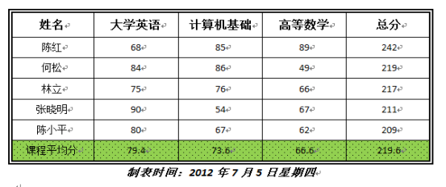
图 2. 26 学Th成绩表样张
5．参照如图 2. 26 所示的样张，制作一份个人简历表。
图 2. 25 个人简历样张
实验三 Word 图形处理
一、实验目的
1. 掌握文本框的插入和编辑文本框
2. 掌握 Word 2007 中文版式的应用。
3. 掌握图片插入和图形格式的设置。
4. 掌握在 Word 中绘制图形和对图形进行编辑。
5. 掌握 SmartArt 图形的插入和设置。
6. 掌握插入公式、插入艺术字并进行图文混排。
二、实验内容
1. 新建一个名为 W3.doc 的文档，并保存在 E 盘根目录下的 Word 文件夹中。
2. 插入两个文本框，分别在其中输入文字。文本框中的文字一个横排，一个竖排，对
竖排的文字进行简体转换成繁体，最后对文本框添加边框、底纹。样张如图 2. 27 所示。
图 2. 27 文本框样张
【知识点提示】
u 竖排文本框可单击“插入”|“文本”组中的“文本框”按钮，在弹出的列表框中 选择“绘制文本框”命令来创建“竖排文本框”，也可先按横排输入，然后用鼠标 指向要竖排的文本框单击右键，选择“文字方向”命令进行设置。
u 给文本框加边框和底纹：先选中文本框，单击鼠标右键，选择“设置文本框格式” 命令，在其对话框中进行设置，如图 2. 28 所示。
图 2. 28 “设置文本框格式”对话框
dianzijishu
3. 给汉字标注拼音。例如： 电 子技 术
【知识点提示】
u 先选中要加拼音标注的文字，然后单击“开始”选项卡“字体”组中的“拼音指南” 按钮，在打开的“拼音指南”对话框中进行设置。
王红 邹丽
4. 将字符合并，例如：“乒乓球决赛：刘梅对李英”
5. 插入带圈字符，例如： ○电 、□子 、△商 、◇务
6. 中文字纵横混排，例如： 混排
【知识点提示】
u 先选中要纵横混排的文字，将其字号设置较大些，然后单击“开始”|“段落”组 上的“中文版式”按钮，在打开的菜单中选择“纵横混排”进行设置。
7. 在文档中插入公式，例如：
s = å
i=1
【知识点提示】
xi - a +
a 2 - ò3
xi dx
u 将光标置于要插入公式处，执行“插入”|“文本”组上的“对象”命令按钮，打 开“对象”对话框，在其中选择“Microsoft 公式 3.0”。
8. 在文档中插入图片（图片可用剪贴画、也可来自文件，或者从网上得到）、插入艺术
字。要求文字环绕图片，样张如图 2. 29 所示。
图 2. 29 插入图片样张
9. 在文档中插入自绘图形，并对其填充颜色、添加文字、设置三维效果，最后将其组
合。
【知识点提示】
u 单击“插入”|“插图”组上的“形状”按钮，在打开的列表框中选择一种形状绘制 图形。
u 选中绘制的图形单击右键，执行“添加文字”命令。
u 对图形填充颜色、设置三维效果，可以单击“绘图工具”|“格式”选项卡上的相关 命令按钮进行设置，如图 2. 30 所示。
图 2. 31 “绘图工具”|“格式”选项卡
u 将绘制的图形组合的方法是：先选中其中要组合的对象之一，按住 Shift 键再选择另 外的组合对象，直到选中所有要组合的对象，单击右键执行“组合”命令即可。图 2. 31 是一组合图形展示。
图 2. 30 绘制图形展示
10. 插入正在编辑的窗口。
【知识点提示】
u 用 Alt + Print Screen 组合键先将活动窗口复制到剪贴板中，再把光标置于要插入 处，然后用 Ctrl+ C 将剪贴板中的活动窗口插入到文档中。如图 2. 32 是插入正在 编辑的窗口。
图 2. 32 插入正在编辑的窗口
11. 参照如图 2. 33 所示的样张，创建一个 SmartArt 图形。
【知识点提示】
图 2. 33 SmartArt 图形样张
u 图形中的竖排文字可以通过选中形状，然后单击右键，选择“设置形状格式”，在 打开的“设置形状格式”对话框“文本框”选项中进行设置，如图 2. 34 所示。
图 2. 34 “设置形状格式”对话框
实验四 综合应用
一、实验目的
1．综合前面掌握的知识，学会对长文档进行排版。
2．学会对长文档自动生成目录。
3．掌握文档的打印。
二、实验内容
1． 综合应用
通过前面对 Word 字处理软件的学习和使用，我们已初步掌握了利用计算机对文字进行 排版。本实验以一个长文档为例，作为对前面已学习过知识的综合应用，并以论文排版作为 应用背景来完成规定的格式要求。对于论文之类的长文档排版是一项非常有用的工作，对每 个学生来说，毕业论文内容的撰写很重要，但最后的排版也影响着论文的质量。
本实习例子以教材第十章的部分文字为排版的素材，并以 W4.doc 文件保存。按照作者 所在学校论文规定的格式（可根据各自学校的规定做相应的修改）进行排版，自动生成目录， 最后完整地打印装订。
2．论文版面总要求：
（1）“页面”大小 A4 纸，设置：左、右页边距各为 2 厘米；页眉、页脚各为 2.5 厘米； 文章内容行距为“单倍行距”。
（2）“目录”在前，正文在后。目录页码为罗马数字（Ⅰ、Ⅱ、Ⅲ…），正文页码为阿 拉伯数字，并从 1 开始编号。
（3）“页眉”设置学校的校徽和学校校名；“页脚”在底部，居中放置页码。
（4）引文要有脚注，在每页的底端。
（5）“图号”以“章号．节号．序列号”编号（例图 5.2.3，表示第 5 章，第 2 节，第 3
幅图）。
（6）“表号”与图号编号相似（例表 5.3，表示第 5 章的第 3 张表）；“表题”在表的左 上方。
（7）“参考文献”在最后，按文章中出现的先后顺序，用数字排序（1，2，3……），参 考文献内容依次为：序号，作者．书名．出版地：刊物或出版社，出版日期。
3．论文排版格式要求： 论文标题名（居中、黑体、二号）
专业 姓名 指导老师姓名（居中、楷体、四号）
【摘要】（顶格书写 黑体 小五号）、内容不少于 200 字（空一格书写 宋体 小五号）
【关键词】（顶格书写 黑体 小五号）、内容（空一格书写 宋体 小五号） 正文章节分三级标题：
1 章名（标题 1 居中书写 宋体 二号 加粗）
1.1 节名（标题 2 顶格书写 黑体 三号 加粗）
1．1．1 小节名 （标题 3 空两格书写 宋体 三号加粗） 三级以下单独占行的标题顺序采用：
（1）（空两格书写 黑体 五号）
①（空两格书写 黑体 五号）
正文内容（宋体 五号） 脚注引用数字①②③④ 图题（图的下方 居中 宋体 小五） 表题（表的左上方 黑体 小五） 表文、（宋体 小五） 主要参考文献（居中书写 黑体 四号） 参考文献内容（宋体 五号）
【知识点提示】
u 标题 1、标题 2、标题 3 样式与 Word 提供的标题样式的格式相同。
u 选中要设置标题的文字，在“开始”|“样式”组上单击相应的样式按钮，或单击 按钮，在打开如图 2. 35 所示的列表框中选择需要的样式。
图 2. 35 “样式”列表框
图 2. 36 在大纲视图下显示级别 2 图 2. 37 在大纲视图下显示级别 3
4．生成目录 完成以上排版后，添加页眉、页脚，最后生成目录。
【知识点提示】
u 在生成目录前，通过单击“大纲视图”按钮观察目录的层次结构，若不符合要求， 可进行相应的修改，图 2. 36、图 2. 37 分别显示了大纲视图效果。
u 生成目录的方法：
（1） 将光标定位在正文的最前面。
（2） 单击“引用”|“目录”组上的“目录”按钮，在打开的目录菜单中选择“自动目 录 1”即可，如图 2. 38 所示。
（3） 如果要对目录选项进行设置，可以选择“插入目录”，在打开如图 2. 39 所示的“目 录”对话框中设置。
最后生成目录如图 2. 40 所示。
图 2. 38 “目录”菜单 图 2. 39 “目录”对话框
图 2. 40 Th成目录展示
5．按两种页码格式打印目录和正文。 目录页码要求为罗马数字（Ⅰ、Ⅱ、……），正文以 1、2……。这涉及目录和正文使用
两种不同的页码格式，在同一文档中生成两种数字页码。
【知识点提示】
u 在同一文档中生成两种数字页码，可通过插入“分节符”将文档按不同页码格式分 为不同的节来实现。方法如下：
（1） 将光标定位在两种页码格式交点的最后一行行末。
（2） 单击“页面布局”|“页面设置”组上的分隔符按钮，在“分节符”下选择“下一 页”，将文档分为不同的节，如图 2. 41 所示。
（3） 将光标定位在分节位置的当前页，单击“插入”|“页眉和页脚”|“页码”按钮， 选择“设置页码格式”，在打开如图 2. 42 所示的“页码格式”对话框中设置编号 格式（Ⅰ、Ⅱ、……），再次单击“插入”|“页眉和页脚”|“页码”按钮，在打 开的菜单中选择页码插入的位置即可。
（4） 使用和步骤（3）类似的方法对分节位置的下一页进行阿拉伯数字页码的插入。 需要注意的是由于阿拉伯数字页码是重新从 1 开始编号，所以在“页码格式”对
话框中还需将“页码编号”设置为“起始页码”，并从 1 开始。
图 2. 41 “分隔符”菜单 图 2. 42 “页码格式”对话框